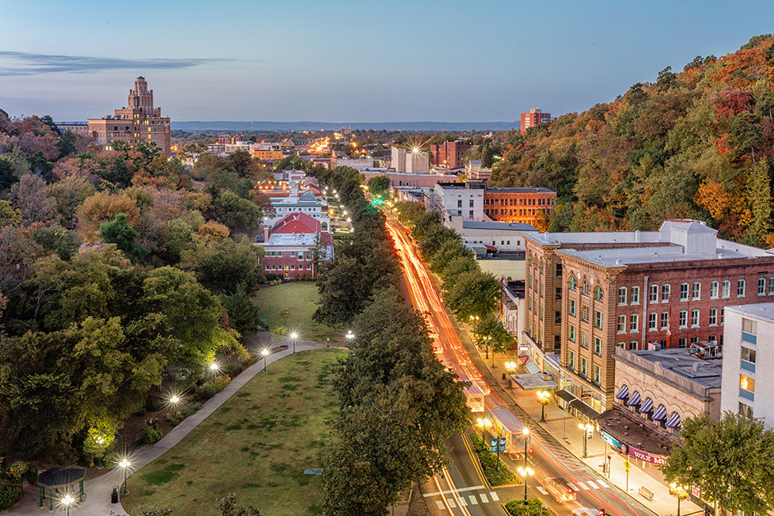
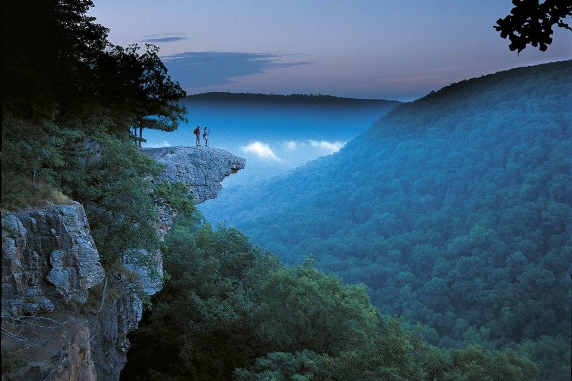

Arkansas is a landlocked state in the South Central region of the Southern United States.[9][10] It borders Missouri to the north, Tennessee and Mississippi to the east, Louisiana to the south, Texas to the southwest, and Oklahoma to the west. Its name derives from the Osage language, a Dhegiha Siouan language, and referred to their relatives, the Quapaw people.[11] The state's diverse geography ranges from the mountainous regions of the Ozark and Ouachita Mountains, which make up the U.S. Interior Highlands, to the densely forested land in the south known as the Arkansas Timberlands, to the eastern lowlands along the Mississippi River and the Arkansas Delta.
The name Arkansas initially applied to the Arkansas River. It derives from a French term, Arcansas, their plural term for their transliteration of akansa, an Algonquian term for the Quapaw people.[14] These were a Dhegiha Siouan-speaking people who settled in Arkansas around the 13th century. Kansa is likely also the root term for Kansas, which was named after the related Kaw people.[14] The name has been pronounced and spelled in a variety of ways.[c] In 1881, the state legislature defined the official pronunciation of Arkansas as having the final "s" be silent (as it would be in French). A dispute had arisen between the state's two senators over the pronunciation issue.
Before European settlement of North America, Arkansas, was inhabited by indigenous peoples for thousands of years. The Caddo, Osage, and Quapaw peoples encountered European explorers. The first of these Europeans was Spanish explorer Hernando de Soto in 1541, who crossed the Mississippi and marched across central Arkansas and the Ozark Mountains. After finding nothing he considered of value and encountering native resistance the entire way, he and his men returned to the Mississippi River where de Soto fell ill.
 